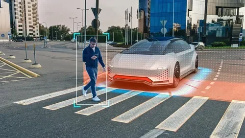
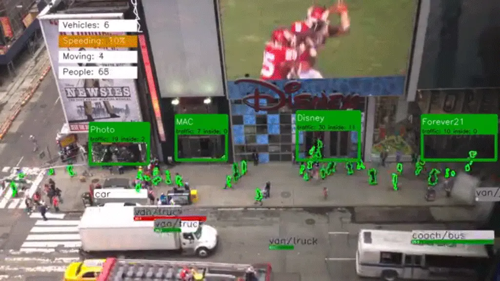
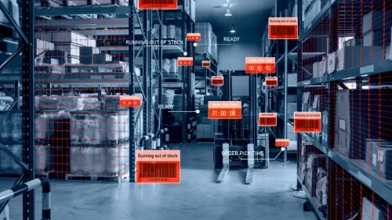

De pixels a informação
Uma câmera entrega uma matriz de pixels. A visão computacional transforma essa matriz em informação útil: uma região colorida, a posição de um marcador ou uma classe de objeto. Isso pode ser feito com regras de processamento de imagem, geometria ou modelos aprendidos.
Neste guia, vamos detectar regiões verdes na webcam com OpenCV. O exercício não precisa de rede neural e ajuda a entender captura, transformação de cor, segmentação e medição antes de integrar a percepção a um robô.
Uma caixa em uma imagem informa posição em pixels. Estimar metros exige informação adicional, como calibração, geometria conhecida, estéreo ou outro sensor.
Diferencie as tarefas
| Tarefa | Pergunta respondida | Saída típica |
|---|---|---|
| Classificação | O que aparece nesta imagem? | Uma classe para a imagem ou recorte. |
| Detecção | Quais objetos e onde estão? | Classes e caixas delimitadoras. |
| Segmentação | Quais pixels pertencem à região? | Máscara por pixel. |
| Rastreamento | Qual região corresponde ao mesmo objeto ao longo do tempo? | Identidades e trajetórias entre quadros. |

Modelos da família YOLO são uma opção para detecção aprendida. A velocidade depende da variante, resolução e hardware; o tempo de resposta precisa ser medido na configuração real. Uma demonstração em notebook não garante o mesmo desempenho em uma placa embarcada.
O que muda entre quadros
Detectar uma região em cada quadro não é o mesmo que manter sua identidade. Se dois objetos verdes cruzarem a cena, o detector por cor abaixo poderá encontrar ambos sem saber qual era o alvo anterior.

Movimento rápido, oclusão e iluminação variável podem interromper a associação. Antes de usar posições para comandar um robô, defina por quanto tempo uma medição é válida e como agir quando o alvo desaparece.
Detecte verde com OpenCV
Você precisa de Python 3, webcam e um ambiente com interface gráfica. Em um ambiente virtual, instale opencv-python e numpy com python -m pip install opencv-python numpy. Salve o exemplo como deteccao_cor.py e execute com python deteccao_cor.py.
import cv2
import numpy as np
# Em imagens HSV de 8 bits no OpenCV: H vai de 0 a 179.
limite_inferior = np.array([40, 70, 70], dtype=np.uint8)
limite_superior = np.array([80, 255, 255], dtype=np.uint8)
kernel = np.ones((3, 3), dtype=np.uint8)
captura = cv2.VideoCapture(0)
try:
if not captura.isOpened():
raise RuntimeError("Nao foi possivel abrir a webcam.")
while True:
ok, quadro = captura.read()
if not ok:
raise RuntimeError("A camera parou de fornecer imagens.")
hsv = cv2.cvtColor(quadro, cv2.COLOR_BGR2HSV)
mascara = cv2.inRange(hsv, limite_inferior, limite_superior)
mascara = cv2.morphologyEx(mascara, cv2.MORPH_OPEN, kernel)
contornos, _ = cv2.findContours(
mascara, cv2.RETR_EXTERNAL, cv2.CHAIN_APPROX_SIMPLE
)
for contorno in contornos:
if cv2.contourArea(contorno) < 500:
continue
x, y, largura, altura = cv2.boundingRect(contorno)
cv2.rectangle(quadro, (x, y), (x + largura, y + altura),
(0, 255, 0), 2)
cv2.imshow("Mascara", mascara)
cv2.imshow("GAIA - Deteccao por cor", quadro)
if cv2.waitKey(1) & 0xFF == ord("q"):
break
finally:
captura.release()
cv2.destroyAllWindows()Mostre um objeto verde à câmera. A janela de máscara deve destacar suas regiões em branco e a imagem deve receber uma caixa. Pressione Q com uma janela em foco para sair. O bloco finally libera a câmera também se ocorrer um erro.
A conversão de BGR para HSV separa matiz, saturação e intensidade, o que facilita selecionar uma faixa de cor. Isso não elimina efeitos de iluminação. Os limites são um ponto inicial para ajuste, e o filtro de 500 pixels depende da resolução e do tamanho do objeto.
A transformação e os intervalos de HSV são descritos no tutorial oficial de espaços de cor do OpenCV.
Da imagem ao comando
Uma integração didática pode usar o centro horizontal da região detectada e compará-lo ao centro da imagem. A diferença em pixels vira uma entrada para uma lógica de correção. Antes de acionar motores, mostre esse erro na tela e confira seu sinal movendo o objeto para os dois lados.
Esse fluxo é uma possibilidade de exercício de robótica, não uma descrição de software já implantado pela equipe.
Além do exercício de cor
Na inspeção e na logística, visão pode apoiar leitura de códigos, verificação de peças e localização de objetos. Cada aplicação exige definir condições de aquisição e critérios de aceitação; uma boa imagem é parte do sistema de medição.

O método do tutorial é apropriado para cenários em que a cor separa bem o alvo do fundo. Para reconhecer objetos com grande variação de aparência, avalie descritores, marcadores ou modelos aprendidos.
Teste as condições reais
| Situação | O que observar |
|---|---|
| Luz forte, sombra e luz artificial | A máscara mantém o objeto sem incluir grande parte do fundo? |
| Objeto perto e longe | O limite de área ainda faz sentido? |
| Câmera em movimento | Desfoque e atraso afetam a posição calculada? |
| Alvo fora da imagem | A aplicação identifica a ausência sem reutilizar uma posição antiga? |
| Hardware final | Qual é a latência do caminho completo, incluindo captura e comunicação? |
Guarde pequenas sequências representativas para repetir a avaliação após mudanças. Diferencie taxa de quadros, em FPS, de latência: uma câmera pode entregar muitos quadros por segundo com atraso acumulado no processamento.
Próximos passos
Você já percorreu captura, segmentação e extração de regiões. Como exercício, adicione o centro da caixa à imagem e registre em quais condições aparecem falsos positivos.
Depois, estude organização de dados e avaliação de modelos ou conecte uma medição validada ao controle em malha fechada. Preserve a distinção entre percepção, decisão e atuação.